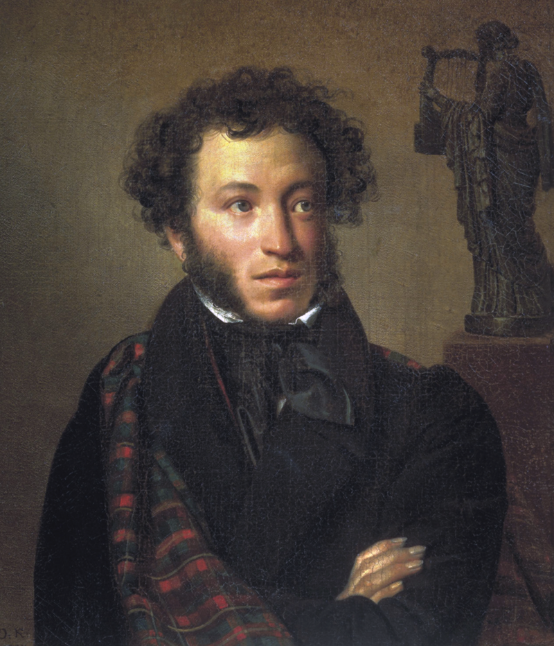

Alexander Sergeyevich Pushkin was a Russian poet, playwright, and novelist of the Romantic era who is considered by many to be the greatest Russian poet and the founder of modern Russian literature. wiki
Pushkin was fatally wounded in a duel with his brother-in-law, Georges-Charles de Heeckeren d'Anthès, also known as Dantes-Gekkern, a French officer serving with the Chevalier Guard Regiment who attempted to seduce the poet's wife, Natalia Pushkina.
